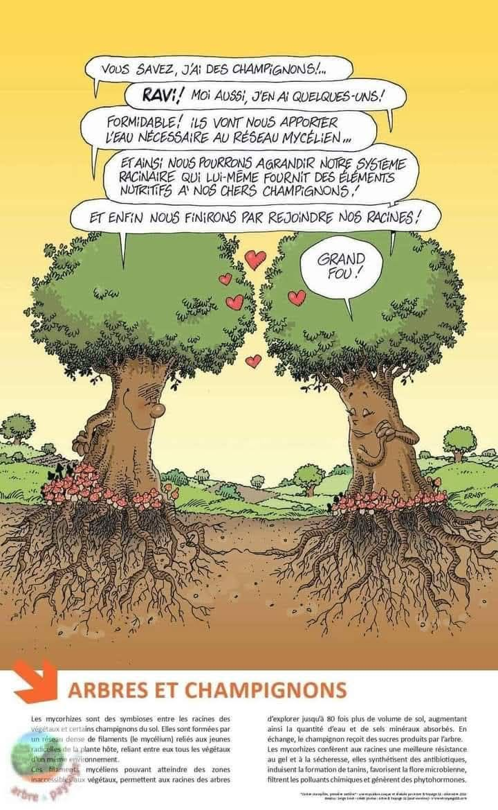

Le pied suit la racine
(Adhar itheddu sazzar. Adage Kabyle)
Je sais qui je suis, dans le doute, dans les flammes :
Un enfant de la résistance, un poète sans armes.
Je suis, dis-je, le souffle des étoiles,
Un simple passant sur l’infime toile.
Je suis qui je sais, fragile, décidé,
Un homme parmi d’autres, mais le poing levé.
La nuit venue, je parle aux disparus :
« Je suis encore là, je ne romps plus. »
Je suis né d’un amour pour les mots,
D’une feuille, d’un pays, d’un drapeau.
Ma plume est flamme, ma foi un cri,
Je sème l’espoir au bord de la nuit.
L’aube se lève sur une Algérie blessée,
Aux mille visages, aux douleurs mêlées.
J’écris la rue, j’éveille le silence,
Je tiens debout, je résiste en cadence.
Mon pays éclaté garde sa force,
Souvenir et futur se croisent et s’amorcent.
Je suis vivant, dit l’encre que j’entends,
Même dans l’ombre, ma main je la tends.
Le cœur saigne, le temps efface,
Mais l’encre demeure, trace après trace.
Je parle aux absents, je parle aux vivants,
Je suis l’éclaireur d’un peuple tremblant.
Le poète et sa muse avancent sans trône,
Mais avec pour royaume un monde qui frissonne.
Le chant des muses me guide sans repos,
L’amour, même chimérique, me tient chaud.
Quand tout dort, je marche en porteur,
D’aurores et d’histoires, de douleurs.
La poésie me tient quand tout s’effondre,
Elle me dit : il reste des cendres à répandre.
La poésie je la respire, je la donne à pleines mains,
À l’absent, à l’enfant, à l’humain.
À la femme debout, au silence tenace,
À l’ombre, au combat, à ce qui passe.
L’humanité, dis-tu ? doute et vacille,
Elle court à sa perte, sans le savoir, sans fil.
Il faut continuer à dire « je t’aime »
A la beauté, à la paix suprême.
À mes enfants d’encre, je laisse ces pages,
Ce bouquet de poésie, ce feu, en héritage.
L’encre et la terre, mes ancres, mes raisons,
Portent les murmures du temps, porteurs de saisons.
Le temps vole et floute les visages,
Mais l’encre me garde en partage.
Mes défunts veillent discrets mais présents,
Et je marche en éclaireur, malgré les lâches trahisons.
Aimer, écrire, nommer le vrai,
Même à contre-temps, croire au juste jamais défait.
Alors que l’enfance s’efface doucement,
Le silence me demande : et maintenant ?
Je l’ai dans la peau, dit la terre à l’enfant,
La Kabylie dans le vent.
La Kabylie brûle, mais ses cimes veillent,
Ses enfants chantent sous l’éveil.
Dans chaque regard, une montagne parle,
Et chaque silence devient arme.
Tu saignes par mes vers, ô monde à guérir,
Mais l’espoir s’y inscrit pour ne pas mourir.
Mes nuits nourrissent des rêves fous,
Mes vers cherchent l’éveil partout.
Je crie des mots pour ceux qui ont mal,
Pour que la douleur devienne étoile.
La nature murmure, le cœur écoute,
Les mots deviennent refuge en déroute.
Entre rêve et réalité, je trace une frontière
Où l’art devient refuge, lumière passagère.
Le cœur a ses saisons, il écrit en lumière,
Automne et printemps, souffle des montagnes fières.
Demain commence ici,
J’écris, je pense et je dis.
Chaque saison saigne, chaque feu dit :
Je suis vivant, même la nuit.
Sous la symphonie des songes, dans l’éveil du printemps,
Chaque graine plantée devient cri, devient chant.
Et le cri de l’écrit sauve les consciences,
Car chaque mot vrai est un acte de résistance.
Le vent de l’âme murmure encore ses lois :
Résister, aimer, écrire, voilà mon choix.
Alors j’écris encore, à l’aube, à midi, la nuit,
Même si personne ne lit, même si tout s’enfuit.
Même sans nom, sans toit, sans âge,
Je laisse le verbe en héritage.
L’amour, l’amitié, ces bras invisibles,
Portent les voix des brisés, des mots indicibles.
Il suffit d’un mot, d’un regard,
Pour ranimer l’espoir quelque part.
Sous l’aube douce, je contemple le temps,
Ses murmures, ses blessures, ses absents, ses enfants.
Dans l’ombre des ruelles où l’histoire s’est tue,
Je cueille les souvenirs d’enfance, les douleurs disparues.
La mémoire me suit, fidèle et fine,
Celle d’un peuple, d’une femme, d’une colline.
À toi, Yemma, cœur d’attente et d’or,
À vous, femmes, tendres et fortes encore.
Reines de l’ombre, du feu, de la vie,
Vous portez l’identité et l’envie.
Même brûlée, la terre espère,
Sous vos silences, une lumière.
Sagesse et innocence dansent encore,
Comme un vieux poème qui s’endort.
Patience et passion forgent mes jours,
Dans l’attente, je sculpte l’amour.
L’homme cherche paix et douceur,
Mais souvent détruit ce qu’il ignore.
Et pleure, seul, devant ses guerres,
À l’aube d’un monde à refaire.
L’espoir attend la pluie intérieure,
La mer des songes ouvre son cœur.
Chaque matin est une semence,
Et l’insouciance, une défense.
L’éternité se grave sur la pierre,
Par les mères, les prières sincères.
La pluie efface, les justes chantent,
Et la lutte, doucement, reprend.
L’étoile veille, au-dessus de la nuit,
Le rêveur avance, jamais détruit.
Rêves et luttes ne font qu’un,
C’est le sang caché du matin.
Moi, je dresse ce reflet d’un rêve,
Un poème-voix, qui sans trêve
Assemble les morceaux d’un cœur usé,
Et fait tenir debout l’humanité.
Le chant du rêveur éternel, c’est cela :
Continuer à rêver, même quand tout se débat.
Même le silence a ses feux, ses colères,
L’âme invaincue ne se rend qu’à la lumière.
L’amitié tend ses ponts fraternels,
Répare les failles, les gestes éternels.
L’homme, miroir des cieux et de la terre,
Est capable du pire, et parfois d’éclairs.
La terre brûle, espère, chante et saigne,
Mais l’éveil des songes la relève et l’enseigne.
Des siècles et des hommes, la même rengaine,
Chaque instant est semence et graine.
Le monde tourne, mais oublie parfois,
Les mains, ces racines, cette loi :
Celles qui plantent et qui prient,
Celles qui tremblent meurtries.
Même si la folie veille au coin,
La lumière jaillit d’un rien.
Un instant suffit pour tout raviver,
Pour rappeler pourquoi aimer.
Car la vie, même brisée, même fatiguée,
Reste une symphonie des songes, un été.
Les sentiers lumineux ne sont jamais tracés,
Il faut les inventer, souvent les mériter.
La tête dans les étoiles, les pieds sur terre,
Je vais, humble, vers ma lumière.
Il n’y a pas de monde sans peine,
Sans luttes, sans chaînes.
Mais le pouvoir du silence, parfois, est cri,
Et le souffle des étoiles un pacte non écrit.
L’éveil, les soirs, les chants du matin,
Ne sont pas reflets mais chemins.
L’âme vit dans le sable, le cri,
Et murmure simplement : je suis ici.
Et même si demain chancelle, ou s'efface,
Je garde en moi cette lueur d’espoir tenace.
Un poème, une main, une voix douce et forte :
Ça suffit pour que l’aube l’emporte.
Car l’éternel combat du bien contre le mal,
Se livre aussi dans les marges, dans le banal.
Et si je dois partir, l’adieu sera discret,
Mais mes mots resteront, souffles ou secrets.
Ils diront simplement, sans bruit, sans drame :
J’ai aimé le monde, j’ai servi l’âme.
Djamel Metref
At Yenni le 30 avril 2025

← Tous les poèmes